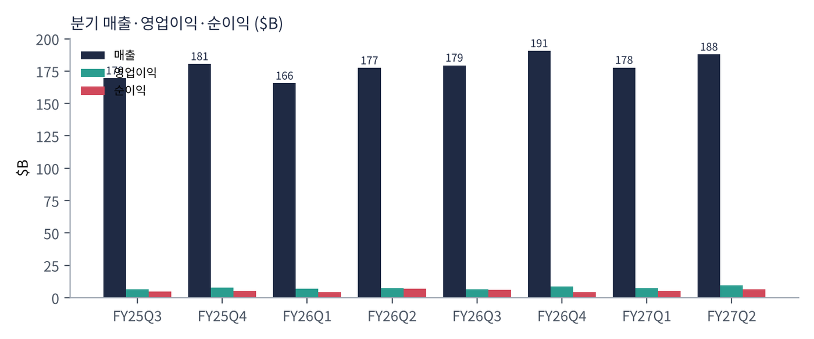
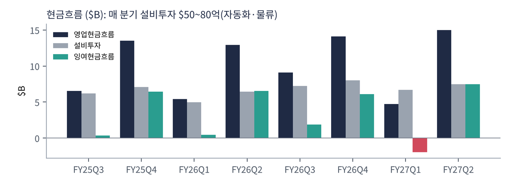
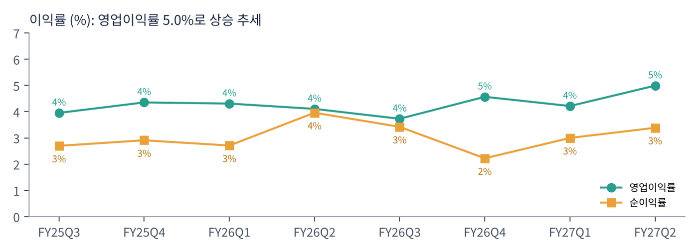
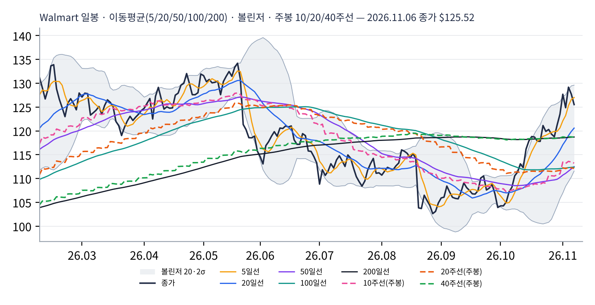
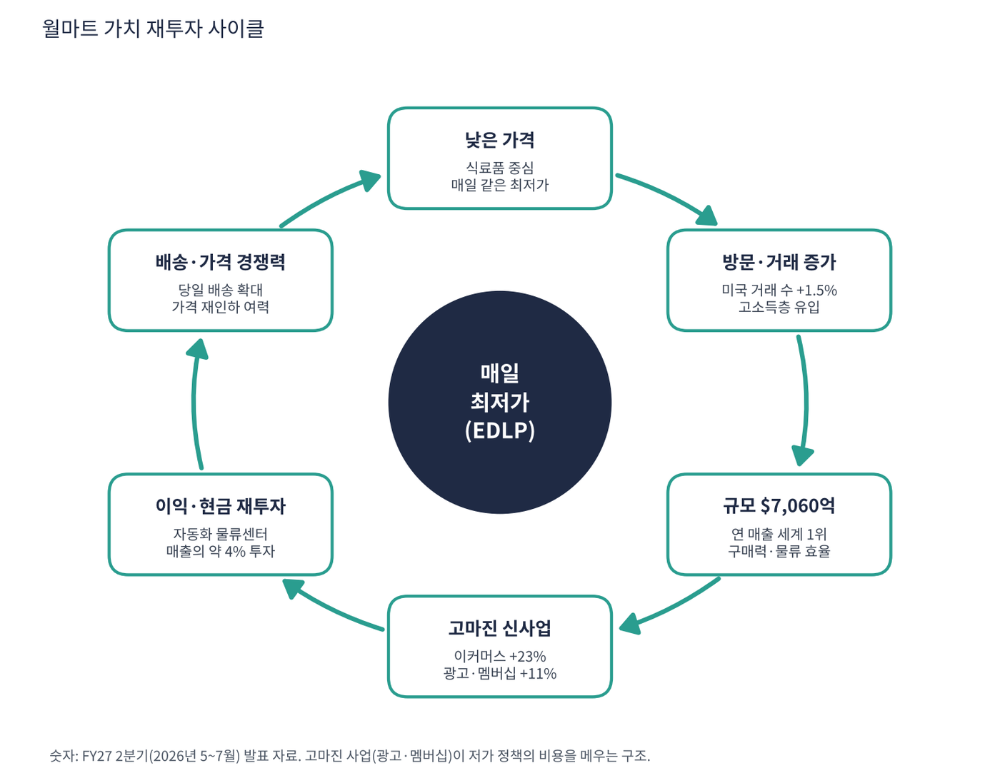

Walmart는 매출 기준 세계 최대 기업이다. 미국 4,600여 개 매장(Walmart), 회원제 창고형 매장(Sam's Club), 멕시코·캐나다·중국·인도(Flipkart) 등 해외 사업을 갖고 있다. 과거 '싸게 파는 대형마트'였지만 지금은 이커머스·광고·멤버십으로 돈을 버는 '유통 플랫폼'으로 바뀌는 중이다. 2025년 12월 상장 거래소를 뉴욕증권거래소에서 나스닥으로 옮겼다.
| 항목 | 내용 |
|---|---|
| 종목 | Walmart Inc. (WMT) · NASDAQ · 1962년 · 본사 아칸소주 벤턴빌 |
| 밸류에이션 | PER 49.6배(GAAP TTM) · 조정 EPS 기준 약 45배(내 계산) · P/S 1.37배 (11/23 종가 $129.58) |
| 최근 분기(FY27 3Q, 2026년 8~10월) | 매출 $1,888억(+5.2%), 영업이익 전년 대비 +16%, GAAP EPS $0.62, 조정 EPS $0.65 |
| FY27 가이던스 | 순매출 +4.9~5.2%(환율 제외), 조정 영업이익 +8~8.6%, 조정 EPS $2.84~2.89(2026.11.19 상향) |
| 다음 실적 | FY27 4분기 실적: 2027년 2월 중(회사 확정 일정 확인 필요). 4분기 매출 가이던스 $1,992~2,011억 |
| 직책 | 인물 | 역할·특징 |
|---|---|---|
| CEO | John Furner | 2026년 2월 CEO 취임(Doug McMillon 후임). Walmart U.S. CEO 출신, 매장 직원으로 시작한 '현장형' 리더 |
| CFO | John David Rainey | 가이던스·투자 배분 담당 |
| 이사회 | Walton family | 창업주 가문이 최대주주 — 초장기 경영 관점 |
경영 스타일: '매일 최저가(EDLP)를 지키면서 고마진 사업을 키운다'. Walmart는 가격으로 고객을 모으고, 모인 고객에게서 광고(Walmart Connect)·멤버십(Walmart+)·마켓플레이스 수수료로 돈을 번다. 매출의 약 4%를 매년 자동화 물류센터·매장 재단장·배송망에 투자한다. 3분기에 회사는 연간 전망을 두 번째로 올렸고, 미국에서 Walmart+와 Sam's Club 플러스를 묶은 연 $120 번들 멤버십을 시작했다. 경영진은 높은 디젤 가격이 연료·운송비 부담을 이어갈 수 있다고 경고했다.
로봇 자동화 물류센터, 매장을 배송 거점으로 쓰는 '매장 풀필먼트'(미국 인구 대부분에 당일 배송), 1억 명이 넘는 고객 구매 데이터로 광고 사업 운영.
매장·온라인·배송·광고·금융(OnePay)을 묶어 Amazon과 정면 경쟁. 고소득 가구까지 고객층을 넓혀 '싼 곳'이 아니라 '편한 곳'이 되는 것.
다음 실적발표(FY27 4분기)는 세 가지 질문에 답하는 자리다.
1. 4분기 매출이 가이던스($1,992~2,011억)에 들어오고 Flipkart 일정 효과가 되돌아오나?
2. Sam's Club 영업이익 감소가 번들 멤버십 때문에 길어지나?
3. 연간 가이던스(조정 영업이익 +8~8.6%, 조정 EPS $2.84~2.89)를 지키고 비용 부담을 이기나?
한 줄 판정 규칙: 사이클은 이미 강하므로 3번(가이던스·비용)이 핵심이다. 2번이 나빠지면 번들 멤버십이 이익을 깎는다는 우려가 남는다.
일정: FY27 4분기(2026년 11~1월) 실적은 2027년 2월 중으로 보이나 회사 확정 일정은 확인 필요. 아래 현재값은 2026.11.23 종가·FY27 3분기 발표 기준이다.
| 분기 | 매출 | YoY | 영업이익 | 이익률 | 순이익 | 영업현금 | 설비투자 | EPS | 조정 EPS | 특이 사항 |
|---|---|---|---|---|---|---|---|---|---|---|
| FY26Q1 | $1,656억 | – | $71.3억 | 4.3% | $44.9억 | $54.1억 | $49.9억 | $0.56 | $0.61 | |
| FY26Q2 | $1,774억 | – | $72.9억 | 4.1% | $70.3억 | $129억 | $64.2억 | $0.88 | $0.68 | 투자 평가이익 |
| FY26Q3 | $1,795억 | +5.8% | $67.0억 | 3.7% | $61.4억 | $91.0억 | $72.2억 | $0.77 | $0.62 | |
| FY26Q4 | $1,907억 | +5.6% | $87.1억 | 4.6% | $42.4억 | $141억 | $80.2억 | $0.53 | $0.74 | 투자 평가손실 |
| FY27Q1 | $1,778억 | +7.3% | $74.9억 | 4.2% | $53.3억 | $47.4억 | $66.8억 | $0.67 | $0.66 | |
| FY27Q2 | $1,879억 | +5.9% | $94억 | 5.0% | $63.9억* | $149.6억* | $74.8억* | $0.80 | $0.81 | |
| FY27Q3 | $1,888억 | +5.2% | 약 $78억* | 약 4.1%* | – | – | – | $0.62 | $0.65 | 컨센서스 $0.64 상회, 연간 가이던스 상향 |
조정 EPS는 트레이딩뷰·회사 발표 비GAAP 값이다(FY27Q3 $0.65). *는 내 계산: FY27Q2 순이익·영업현금·설비투자는 보고서의 최근 4분기 합계에서 앞 3분기를 뺀 값이고, FY27Q3 영업이익은 전년 FY26Q3 $67.0억에 회사가 밝힌 증가액 약 $11억(+16%)을 더한 값이다. FY27Q3 순이익·영업현금·설비투자는 이번 갱신에서 확인하지 못했다. 아래 차트는 FY27Q2까지의 값이다.


흐름 요약: 매출은 매년 4~7% 꾸준히 늘고, 영업이익률은 4%대에서 2분기 5.0%로 올라섰다. 3분기는 영업이익이 +16%(조정·환율 제외 +5.5%)였고 이커머스 +17%, 광고 +25%가 끌었다. 순이익이 분기마다 들쭉날쭉한 것은 보유 투자 지분의 평가손익 때문이라 영업이익을 봐야 한다. 설비투자는 분기 $50~80억으로 매우 크며, 최근 4분기 FCF는 약 $135억(영업현금 $429억 − 설비투자 $294억)이다.
| 부문·사업 | 돈을 버는 방식 | 비중·성장 |
|---|---|---|
| Walmart U.S. | 식료품·생활용품·약국 중심 매장 + 온라인 주문·배송 | 3분기 순매출 $1,250억(+3.6%, 영업이익 +9% $63억), 동일점 +2.9%(거래 수 +1.5%, 객단가 +1.4%). 매출 약 68%(FY25 연간 기준) |
| 해외 | 멕시코(Walmex), 캐나다, 중국, 인도(Flipkart·PhonePe) | 3분기 순매출 $359억(+7%, 환율 제외 +3.3%). 약 18% |
| Sam's Club | 회원제 창고형 매장 | 3분기 순매출 $259억(+10%), 동일점 +4.9%, 영업이익 -15.8%. 약 13% |
| 글로벌 이커머스 | 온라인 판매·마켓플레이스·배송 (부문 횡단) | 글로벌 +17%, 미국 +23%(11분기 연속 20%대), Sam's Club +30% |
| 고마진 사업 | 광고(Walmart Connect), 멤버십·기타 수입 | 광고 글로벌 +25%(미국 +37%), 미국 멤버십·기타 수입 +43%, 회원비 +17% |

3분기 연결 매출총이익률은 +28bp(미국 +50bp) 올랐다. 미국 동일점 매출 +2.9%는 거래 수 +1.5%, 객단가 +1.4%로 구성되고, 약가 규제(최대공정가격 제도) 때문에 약국 물가가 내려 미국 전체 동일점이 약 0.7%p 깎인 숫자다. 매출 성장은 5%대지만, 이익 성장은 광고·멤버십 같은 고마진 사업이 끌고 간다.
Walmart 창업주 Sam Walton의 원칙 '고객의 돈을 아껴 더 나은 삶을 살게 한다'는 지금도 회사의 목적이다. 차이는 이제 그 수단이 매장이 아니라 데이터·배송·플랫폼이라는 점이다.
| 축 | 내용 |
|---|---|
| 가격 리더십 | EDLP 유지 — 고객 유입의 출발점 |
| 옴니채널 | 매장 = 물류센터. 당일·몇 시간 배송 |
| 고마진 플랫폼 | 광고·멤버십·마켓플레이스·금융으로 이익률 상승 |
| 자동화 | 물류·매장 자동화로 인건비 비중 축소 |

| 이동평균 | 값 | 종가 대비 | 해석 |
|---|---|---|---|
| 5일선 | $127.69 | -1.5% | 현재가가 위 |
| 20일선 | $125.79 | -2.9% | 현재가가 위 |
| 50일선 | $117.06 | -9.7% | 현재가가 위 |
| 100일선 | $113.67 | -12.3% | 현재가가 위 |
| 200일선 | $118.98 | -8.2% | 현재가가 위 |
52주 고점 $135.16(2026-05-19), 52주 저점 $102.15(2026-08-21). 종가 $129.58(2026-11-23) 기준이다.
| 규칙 | 기준 | 현재 값 | 신호 |
|---|---|---|---|
| 장기 추세 필터 | 종가 vs 200일선 | $129.58 > $118.98 | 매수 |
| 중장기 교차 | 50일선 vs 200일선 | $117.06 < $118.98 | 매도 |
| 단기 교차 | 20일선 vs 50일선 | $125.79 > $117.06 | 매수 |
| 돈키언 채널 | 55일 고가 $131.82 / 저가 $103.39 | 중간값 $117.60 위 | 매수 |
| 1개월 모멘텀 | 21거래일 수익률 | +8.1% (기준 $119.89) | 매수 |
| 3개월 모멘텀 | 63거래일 수익률 | +23.0% (기준 $105.38) | 매수 |
| 6개월 모멘텀 | 126거래일 수익률 | +9.3% (기준 $118.57) | 매수 |
| 12개월 모멘텀 | 252거래일 수익률 | +21.0% (기준 $107.11) | 매수 |
| 종합 (8개 평균) | +0.75 | 매수 우위 |
해석: 8개 신호 중 매수 7개, 매도 1개(점수 +0.75, 매수 우위)다. 14일 ATR $3.22 (2.5%).
| 가격·조건 | 무엇이 바뀌나 | 의미 |
|---|---|---|
| $118.98 | 종가 vs 200일선 | 이탈하면 매수 → 매도 |
| $119.89 | 1개월 기준가 | 이탈하면 매수 → 매도 |
| $105.38 | 3개월 기준가 | 이탈하면 매수 → 매도 |
| $118.57 | 6개월 기준가 | 이탈하면 매수 → 매도 |
| $107.11 | 12개월 기준가 | 이탈하면 매수 → 매도 |
| $117.60 | 돈키언 중간값 | 이탈하면 매수 → 매도 |
| 50일선이 200일선 위로 | 50/200 교차 | 매도 → 매수 |
| 구분 | 가격대 | 근거 |
|---|---|---|
| 저항 1 | $131.82 | 55일 고점 |
| 저항 2 | $135.16 | 52주 고점 |
| 지지 1 | $127.69 | 5일선 |
| 지지 2 | $125.79 | 20일선 |
점수는 +0.75(매수 우위)다. 14일 ATR은 $3.22로 현재가의 2.5%다. 가까운 저항 $131.82을 종가로 넘는지와 가까운 지지 $127.69를 지키는지가 신호 전환의 기준이다. 11/19 실적 발표 뒤 주가는 $129.58(11/23)까지 올라 52주 고점 $135.16에 가깝다. 다음 실적은 2027년 2월이다. (내 가정, 매매 권유 아님)
| 악재 요인 | 내용 | 강도 |
|---|---|---|
| 밸류에이션 | PER 49.6배(GAAP), 조정 기준 약 45배, 조정 PEG 약 4.0. 실적이 기대에 조금만 못 미쳐도 하락 폭이 클 수 있음 | 높음 |
| 연료·원가 | 경영진이 높은 디젤 가격이 연료·운송비 부담을 이어갈 수 있다고 경고. 수입 상품 관세도 가격 인상 또는 마진 희생 요인 | 중간 |
| 약가 규제 | 최대공정가격 제도로 Walmart U.S. 건강·웰니스 동일점이 약 -8%p 깎임(미국 전체 동일점 약 -0.7%p) | 중간 |
| Amazon 경쟁 | 배송 속도·광고 시장 경쟁 | 중간 |
| Sam's Club 이익 | 3분기 영업이익 -15.8%(전년 Sam's Cash 미사용 수익·LIFO 비용·번들 멤버십 비용). 번들 영향은 FY28 3분기까지 | 중간 |
| 소비 둔화 | 저소득층 소비 위축(고소득층 유입이 일부 상쇄) | 참고 |
| 티커 | 회사 | PER(TTM) | PEG | P/S | EPS 성장(YoY) |
|---|---|---|---|---|---|
| WMT | Walmart | 49.6배 | – | 1.37배 | -8% |
| COST | Costco | 51.4배 | 3.79 | 1.62배 | +14% |
| AMZN | Amazon | 20.6배 | 0.27 | 3.38배 | +75% |
| TGT | Target | 15.6배 | 0.50 | 0.69배 | +31% |
| KR | Kroger | 36.3배 | – | 0.28배 | -53% |
| DG | Dollar General | 17.4배 | 0.40 | 0.66배 | +42% |
| BJ | BJ's Wholesale | 19.7배 | 1.08 | 0.56배 | +19% |
WMT의 GAAP EPS는 투자 지분 평가손실로 TTM이 전년보다 줄어(-8%) PEG가 산출되지 않는다. 조정 EPS(TTM 약 $2.86, 전년 약 $2.57) 기준으로는 PER 약 45배, 성장 약 +11%, PEG 약 4.0(내 계산)이다.
비교 결론: Walmart PER 49.6배는 Amazon(20.6배)의 2.4배이고 Target(15.6배)·Dollar General(17.4배)의 3배 안팎이다. Amazon은 EPS +75%로 PEG 0.27(적극 매수 구간)이지만 Walmart는 조정 기준으로도 PEG 약 4.0이다. 성장 대비 가격으로는 피어 중 가장 비싼 축이고 Costco(PER 51.4배)만 비슷하다.
Walmart는 적자 기업이 아니다. 최근 4분기 순이익 $221억, FCF $135억으로 현금 런웨이는 의미가 없다.
| 지표 | 값 | 의미 |
|---|---|---|
| 최근 4분기 영업현금 | $429억 | SEC XBRL |
| 최근 4분기 설비투자 | $294억 | 매출의 4% |
| 잉여현금흐름(FCF) | +$135억 | 트레이딩뷰 $135억과 일치 |
| P/FCF | 약 79배 | FCF 수익률 약 1.3%(스캐너 TTM FCF $129억, 11/23 기준 내 계산) |
| 회사 | P/S | 영업이익률 | 해석 |
|---|---|---|---|
| WMT | 1.35배 | 약 4.4% | TTM 매출 $7,358억 |
| Costco(COST) | 1.53배 | 약 3.9% | 회원제 |
| Target(TGT) | 0.67배 | – | 성장 정체 |
| Kroger(KR) | 0.28배 | – | 식료품 |
| Amazon(AMZN) | 3.37배 | 약 11% | 클라우드(AWS) 포함 |
해석: 유통업 P/S는 보통 0.3~0.7배다. Walmart 1.35배는 Target의 2배, Kroger의 5배다. 시장은 Walmart를 '마트'가 아니라 광고·멤버십·이커머스로 이익률이 계속 오를 플랫폼으로 보고 값을 매기는 중이다. 만약 영업이익률이 Amazon처럼 장기적으로 6~7%까지 오른다면 지금 P/S가 정당화되지만, 4%대에 머무르면 비싸다.
| 지표 | 값 | 판정 |
|---|---|---|
| EBITDA (트레이딩뷰, TTM) | $489억 | 흑자 |
| EBITDA 마진 | 6.6% | TTM 매출 $7,452억 대비(내 계산) |
| 방식 | PER | EPS 성장률 | PEG | 판정 |
|---|---|---|---|---|
| 트레이딩뷰 (GAAP TTM) | 49.6배 | -8.3% | 산출 불가 | 성장 음수 |
| 조정 EPS TTM (내 계산) | 45.3배 ($129.58 ÷ $2.86) | +11.3% ($2.57 → $2.86) | 4.0 | 기준 초과 |
| FY27 조정 EPS 가이던스 중간값 | 45.2배 ($129.58 ÷ $2.865) | +8.5% ($2.64 → $2.865) | 5.3 | 기준 초과 |
판정: GAAP PEG는 산출 불가, 조정 기준 PEG 약 4.0~5.3은 기준을 크게 초과해 '투자 적격' 아님. GAAP EPS는 투자 지분 평가손익 때문에 들쭉날쭉하다(3분기에도 주당 -$0.03). 조정 EPS 성장은 +8~11%로 이익률 개선이 이어지지만, PER 45배에 비해 성장이 낮다. 시장은 '앞으로 이익률이 계속 오른다'는 미래를 미리 사고 있다.

Walmart 사이클은 낮은 가격이 고객을 모으고, 규모가 비용을 낮추고, 고마진 사업이 다시 가격을 낮출 여력을 만든다.
| 고리 | 현재 숫자 | 고리 강도 | 약해지는 신호 |
|---|---|---|---|
| ① 낮은 가격 | 식료품 가격 리더십 | 강함 | 관세로 가격 인상 불가피 |
| ② 방문·거래 증가 | 미국 거래 수 +1.5%, 동일점 +2.9% | 강함 | 거래 수 감소 전환 |
| ③ 규모 | 연 매출 $7,064억(FY26) | 강함 | – |
| ④ 고마진 신사업 | 미국 이커머스 +23%, 광고 +25%, 회원비 +17% | 강함 | 광고 성장 둔화, Sam's Club 번들 비용 |
| ⑤ 이익·현금 재투자 | 설비투자 매출의 약 4% | 강함 | FCF 감소 |
| ⑥ 배송·가격 경쟁력 | 매장 배송 주문의 37% 이상이 3시간 이내, 연결 매출총이익률 +28bp | 진행 중 | 배송비 부담으로 이익률 정체 |
판단: 사이클의 모든 고리가 동시에 강하다. 문제는 사이클이 아니라 가격이다. 사이클이 이미 PER 45~50배에 반영돼 있다.